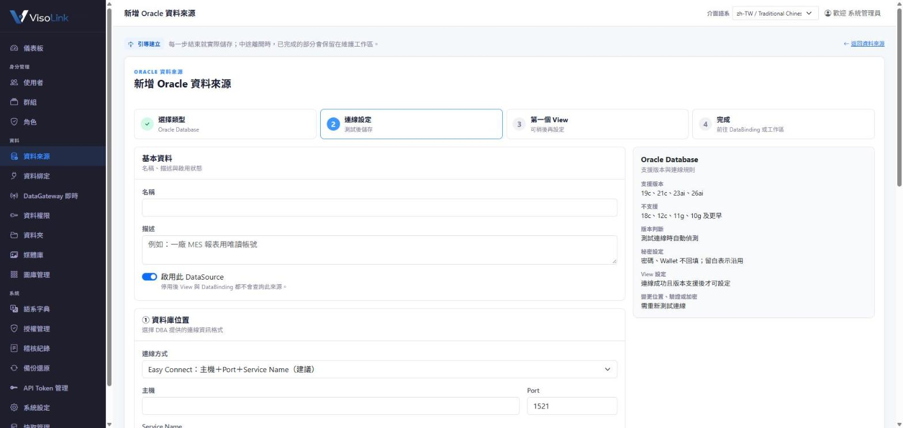
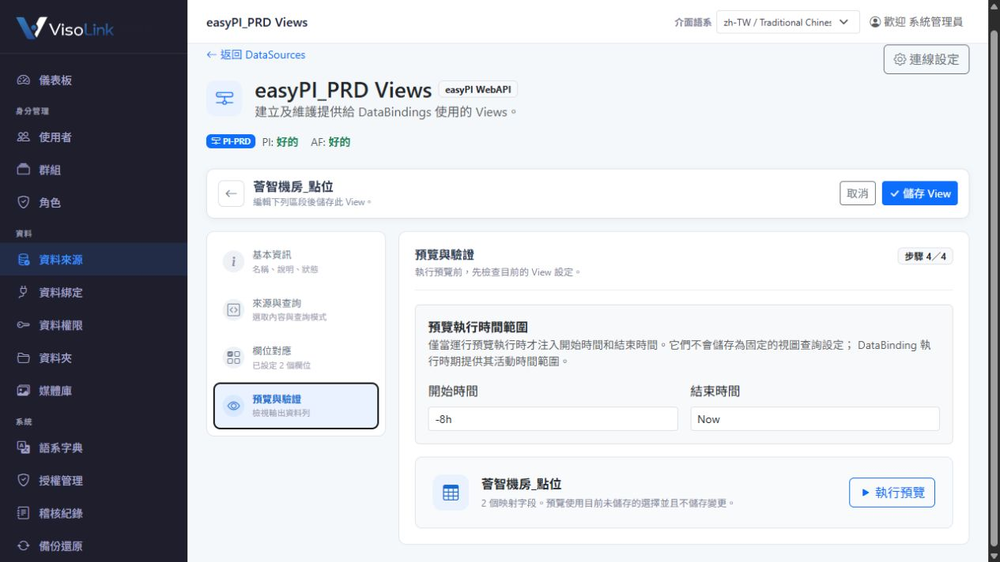
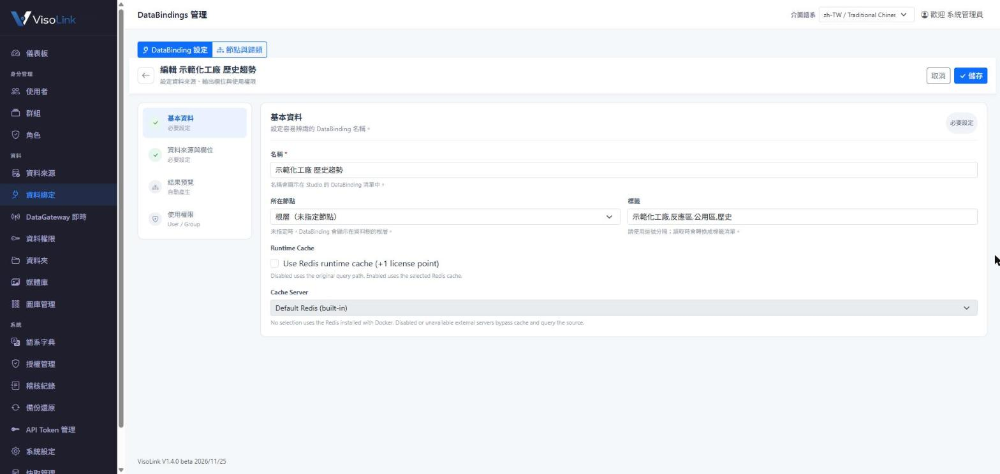
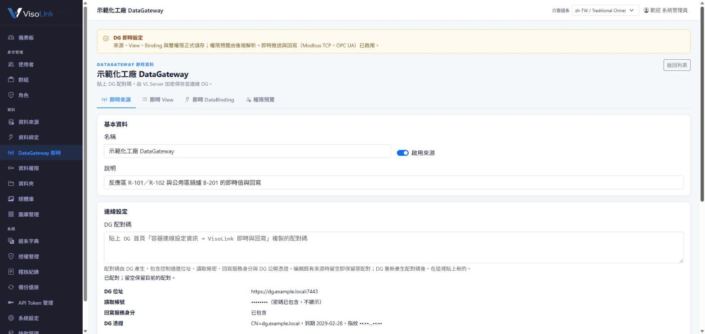
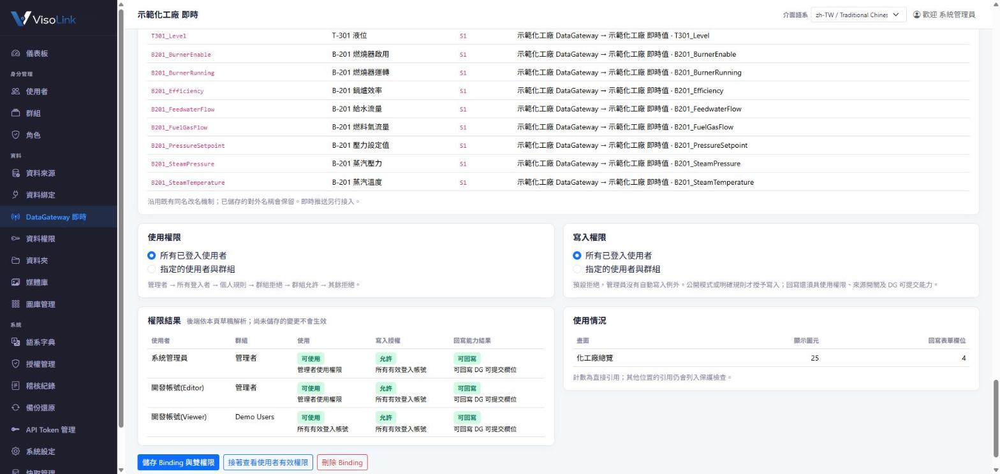

COURSE 05 · DATA ADMINISTRATION
DataSource
Management
從連線、View、DataBinding 到 Runtime，建立可理解、可驗證的資料供應流程；包含 Oracle、VisoLink DataGateway 歷史，以及 DataGateway 即時與回寫。
資料／系統管理員建議 150 分鐘建議先完成 Course 00、01對應 VisoLink 1.4.0-beta
LEARNING OUTCOMES
管理員提供的不是連線，而是可被安全使用的資料
01建立連接
依資料特性選擇類型；關聯式資料庫用引導式設定，含 Oracle；以最小權限設定連線。
02整理資料
建立 View 與 DataBinding，完成名稱、單位與時間定義。
03接上 DataGateway
分清歷史（VisoLink DataGateway 資料來源）與即時（配對碼連線），設定雙權限與回寫。
04驗證與管理變更
從預覽、Studio 到 Runtime 完成端到端測試，控制結構修改與停用影響。
ROLE BOUNDARY
資料管理員是來源系統與 Studio 設計者之間的翻譯者
⌁來源負責人
提供資料定義、連線條件、更新規則與使用限制。
→
⚙資料管理員
建立連線與 View，整理可使用欄位並驗證資料。
→
✦Studio 設計者
使用 DataBinding 建立 Display，不猜測來源技術細節。
Runtime 使用者回報的資料問題，應能沿著 Display → Binding → View → DataSource 找到責任範圍。
LIFECYCLE
DataSource 從需求到停用的完整生命週期
1盤點用途、責任與敏感度
2連接類型與安全設定
3測試可達、驗證與回應
4建構View 與欄位映射
5驗證預覽、Studio、Runtime
6維護變更、稽核與停用
完成定義：連線測試成功不等於工作完成；至少要有一個可預覽的 View，並由實際角色在 Runtime 驗證。
PRE-CHECK
建立 DataSource 前，先收齊八項資訊
資料擁有者
誰能確認定義？業務用途
要回答什麼問題？使用角色
誰需要讀取？資料範圍
需要哪些設備與欄位？更新頻率
多久產生一筆？時間定義
事件或入庫時間？敏感度
是否需要限制？影響與維護
中斷由誰處理？缺少擁有者或資料定義時，不應先建立正式 DataSource 再由使用者自行猜測。
CONNECTOR SELECTION
依資料特性選擇 DataSource 類型；建立後不能變更
 類型依「開發、工業歷史資料庫、關聯式資料庫、時序資料庫」分組。
類型依「開發、工業歷史資料庫、關聯式資料庫、時序資料庫」分組。關聯式資料庫
MySQL、Oracle Database、PostgreSQL、SQL Server；採引導式建立。
時序資料庫
InfluxDB Flux、InfluxDB InfluxQL。
工業歷史資料庫
easyPI WebAPI、IIoTFab PIES、VisoLink DataGateway。
開發
模擬資料：內建固定資料，供展示與畫面驗證。
不要只看資料庫品牌：還要確認查詢模式、時間行為、驗證方式、資料量與使用頻率。選錯類型時，應建立正確類型並完成 View／DataBinding 移轉。
HISTORY vs REALTIME
DataGateway 的資料，歷史與即時分兩處設定
歷史：資料來源 → VisoLink DataGateway
- 位置：資料 → 資料來源 → 新增 DataSource
- 以 Basic 驗證讀取 DataGateway 保存的歷史與目前 Tag 資料
- 建立 View、DataBinding 後供趨勢、表格等 History 元件使用
即時與回寫：DataGateway 即時
- 位置：資料 → DataGateway 即時
- 貼上 DataGateway 的配對碼即可連線，不需要 DG 管理員或 Agent 帳密
- 即時 View、即時 DataBinding 供 Realtime 元件與回寫表單使用
瀏覽器只連 VisoLink：使用者端不直接連 DataGateway；即時值只顯示「現在」，和歷史時間範圍分開。
SECURE CONNECTION
連線帳號只取得完成工作所需的最低能力
端點與網路
確認主機、連接埠、路徑與網路允許範圍；不要在教材或回報中公開不必要資訊。
專用身分
連線帳號不得與個人帳號混用，權限以讀取必要資料為原則。
憑證管理
密碼、Token 與憑證只交由授權人員維護，避免貼入截圖、郵件與紀錄。
名稱依環境與用途可辨識
說明資料責任與使用目的
Timeout避免請求無限等待
GUIDED SETUP
關聯式資料庫採四步驟引導建立，每一步都實際儲存
1選擇類型Oracle、MySQL、PostgreSQL、SQL Server
2連線設定測試連線成功後「儲存並繼續」
3第一個 View選查詢模式；也可「稍後再設定」
4完成「建立 DataBinding」或前往維護工作區
標準選取
選 Table／View、欄位、條件與彙總；執行時產生 SQL。
長表轉寬表（Tag Pivot）
把「點位、時間、數值」長表轉成一個點位一個欄位。
進階 SQL
自行撰寫 SELECT／WITH；保存 SQL 原文。
維護工作區：建立後從「設定」或「Views」進入，分成概覽、連線設定、Views、SQL Console 頁籤；SQL Console 以唯讀方式試跑查詢。中途離開時，已完成的部分會保留。不確定資料表是否適合時序查詢時，點「資料結構設計指南」。
ORACLE DATABASE
Oracle Database：支援 19c 以上，內建驅動不需安裝 Oracle Client

上方是四個步驟；左側填寫基本資料與連線設定，右側說明此類型支援的版本與連線規則。- 資料庫位置Easy Connect（建議）、主機＋Port＋SID、Easy Connect Plus、完整連線描述或 TNS 別名；設定資料庫時區與連線逾時。
- 驗證方式帳號密碼（建議唯讀帳號）、Proxy 驗證、Wallet；秘密設定加密保存、不回填。
- 傳輸加密不加密、Oracle 原生網路加密、TLS（TCPS）單向或雙向驗證。
- 測試連線自動偵測版本；支援 19c、21c、23ai、26ai，成功後才可設定 View。
Oracle 的 DATE、TIMESTAMP 不含時區，查詢時間範圍與「日」時間窗都依「資料庫時區」換算；變更位置、驗證或加密後需重新測試連線。
CONNECTION TEST
測試連線時，辨識失敗發生在哪一層
1網路可達能到達指定端點
2身分驗證帳號或憑證有效
3來源授權可讀必要資料範圍
4服務回應格式與版本可理解
5時間與資料能取得合理樣本
連不上
檢查端點、網路、服務狀態與 Timeout。
驗證失敗
檢查帳號、Token、憑證與來源端權限。
成功但無資料
檢查範圍、查詢條件、時間與資料本身。
DATAGATEWAY HISTORY
VisoLink DataGateway 資料來源：讀取 DataGateway 保存的歷史
 連線區塊填寫 DataGateway WebAPI URL、Account、Password、Timeout、Timezone 與 TLS 憑證驗證；位址與帳號已遮蔽。
連線區塊填寫 DataGateway WebAPI URL、Account、Password、Timeout、Timezone 與 TLS 憑證驗證；位址與帳號已遮蔽。- 取得連線資訊在 DataGateway 總覽「加值開發 WebAPI」卡片取得位址與帳密。
- 填寫連線WebAPI URL、Account、Password；視需要調整 Timeout、Timezone、TLS。
- 測試連線成功時顯示連線成功與 DataGateway 版本。
- 建立並設定 Views儲存 DataSource 並進入 View 精靈。
這裡設定的是歷史讀取；要顯示即時值或回寫設備，請另外設定 DataGateway 即時。
VIEW
View 是來源資料與 DataBinding 之間的穩定介面
View 選取需要的內容、定義查詢方式，並將原始欄位整理成設計人員能理解的輸出。
- 只提供實際需要的資料範圍
- 名稱與說明使用現場或業務語言
- 穩定輸出欄位、型別與時間行為
- 來源結構改變時集中調整與驗證
VIEW MANAGEMENT
以名稱、來源、狀態與欄位數管理 Views
 可搜尋 View 或來源名稱、依狀態篩選；點資料列或鉛筆編輯單一 View，核取方塊僅用於批次刪除。
可搜尋 View 或來源名稱、依狀態篩選；點資料列或鉛筆編輯單一 View，核取方塊僅用於批次刪除。- 名稱應表達設備、資料型態或用途
- 說明應記錄資料定義與責任人
- 停用 View 前確認 DataBinding 與 Display 依賴
- 批次刪除只用於已確認的範圍
- 更新時間可協助追蹤近期變更
FOUR STEPS
View 以四個區段完成建構
1基本資訊名稱、說明與啟用狀態
2來源與查詢選取內容及查詢模式
3欄位對應名稱、型別、來源與單位
4預覽與驗證時間範圍與輸出資料列
建立順序：先確認來源與查詢能產生正確資料，再整理欄位名稱與單位，最後以代表性時間範圍預覽。
SOURCE & QUERY
查詢模式必須符合資料用途
 VisoLink DataGateway 範例：「數據模式」選紀錄或內插；在「Load Tags from DataGateway」輸入樣式後載入，再把可用 Tags 移到已選擇 Tags。
VisoLink DataGateway 範例：「數據模式」選紀錄或內插；在「Load Tags from DataGateway」輸入樣式後載入，再把可用 Tags 移到已選擇 Tags。選取內容
只選必要的 Table、View、Tag、Attribute、Measurement 或 API 資源。
時間行為
紀錄、內插、彙整或關聯式資料庫的三種查詢模式。
Tag 樣式
DataGateway 以 * 載入全部；空白不會載入。
資料量控制
依使用情境限制範圍；查詢不含敏感常數或憑證。
View 的查詢設定決定 DataBinding 能取得什麼；Display 的時間範圍決定執行時要查哪一段時間。
FIELD MAPPING
讓原始欄位成為可理解、可持續使用的輸出
 「欄位對應」逐列設定顯示名稱與單位；型別依來源固定顯示。（此圖為早期版本畫面。）
「欄位對應」逐列設定顯示名稱與單位；型別依來源固定顯示。（此圖為早期版本畫面。）- 原始欄位確認來源端真實識別。
- 顯示名稱轉成設計者與使用者理解的語言。
- 型別依來源固定顯示；確認數值、文字、布林或時間。
- 單位使用正式定義，避免各 Display 自行猜測。
FIELD CONTRACT
欄位一旦被使用，就形成與下游的資料契約
名稱穩定
不要因顯示偏好隨意改名；修改前盤點所有引用。
型別正確
來源看似數字但實際是文字時，需明確轉換或保留原型別。
單位一致
若 View 轉換單位，名稱、說明及驗證資料必須同步。
時間明確
確認時間欄位、時區與事件時間／入庫時間意義。
高影響變更：刪除欄位、改名、改型別或改單位，可能讓現有 DataBinding、Variable、Calculation 與 Display 失效。
PREVIEW
預覽使用代表性時間範圍檢查實際輸出

預覽時間只用於本次驗證，不存入 View。（此圖為早期版本畫面。）- 選擇包含正常生產資料的時間範圍
- 確認欄位數與欄位名稱
- 抽查樣本值、空值與合理值域
- 確認時間排序、時區與資料密度
- 顯示「此 View 未傳回任何欄位」：所選時間內沒有資料，放寬範圍或確認來源端
DATABINDING
DataBinding 把 View 整理成 Studio 使用的資料物件

左側四個步驟：基本資料、資料來源與欄位、結果預覽、使用權限；完成的步驟顯示勾號。- 基本資料可辨識的名稱、所在節點與標籤（Studio 分類與搜尋依此呈現）。
- 來源與欄位選 DataSource 與 View、指定時間欄位、勾選輸出欄位。
- 結果預覽確認時間欄位、輸出名稱與型態。
- 使用權限所有已登入使用者，或指定使用者與群組。
從 View 或 DataSource 頁的「建立 DataBinding」進入會預先帶入來源。勾選 Redis runtime cache 會多用 1 點授權（Course 06 Cache 管理）。
DATAGATEWAY REALTIME
DataGateway 即時：四個分頁完成即時顯示與回寫
 上方四個分頁：即時來源、即時 View、即時 DataBinding、權限預覽；清單顯示讀取設定、回寫狀態與 View／Binding 數量。位址已替換為示範網域。
上方四個分頁：即時來源、即時 View、即時 DataBinding、權限預覽；清單顯示讀取設定、回寫狀態與 View／Binding 數量。位址已替換為示範網域。- 即時來源貼上 DataGateway 配對碼，VisoLink Server 負責連線。
- 即時 View從 Tag 目錄挑選 Tag，設定欄位代碼。
- 即時 DataBinding組合 Tag，設定使用與寫入兩組權限。
- Studio／Runtime元件顯示目前值，回寫表單送出設定值。
PAIRING CODE
配對碼：貼上就完成連線，不必搬憑證或改設定檔

貼上配對碼後，畫面解析出 DG 位址、讀取帳號（密碼已包含、不顯示）、回寫服務身分與 DG 憑證。帳號、憑證指紋與位址已遮蔽。- 取得配對碼DataGateway 總覽「容器連線設定資訊 → VisoLink 即時與回寫」按「顯示」後複製。
- 貼上並核對確認 DG 位址、讀取帳號、回寫服務身分與憑證（CN、到期日、指紋）。
- 測試連線目錄與 Hub 檢查都通過。
- 開放回寫（需要時）開啟「允許經由 VisoLink 回寫這個 DG」，再「儲存來源」。
配對碼是機密：不要貼進文件、截圖或訊息。DataGateway 重新產生配對碼後舊碼立即失效，請在這裡貼上新的；編輯時配對碼欄留空代表保留原配對。
REALTIME VIEW
即時 View：以 Tag 身分識別，DataGateway 改名或換來源都不必重設
 左側 Tag 目錄可依來源 Agent、Connection、資料群組與型別篩選，顯示目前值、品質、可讀與 DG 可寫；右側設定顯示名稱、欄位代碼與單位。
左側 Tag 目錄可依來源 Agent、Connection、資料群組與型別篩選，顯示目前值、品質、可讀與 DG 可寫；右側設定顯示名稱、欄位代碼與單位。- 新增 View輸入名稱、選擇即時來源。
- 挑選 Tag篩選或搜尋；只要可寫的 Tag 時勾「只看可寫」。
- 設定欄位代碼Symbol 引用名稱，同一 View 不可重複。
- 儲存「儲存 View」→「接著建立 Binding」。
「DG 可寫」欄顯示「不可提交」與原因代碼時，代表 DataGateway／Agent 端尚未允許寫入，可讀取但無法回寫。
DUAL PERMISSIONS
即時 DataBinding：使用權限與寫入權限分開設定

設定使用權限與寫入權限；「權限結果」依草稿即時解析每位使用者能否使用、能否寫入。 「權限預覽」輸入使用者後查看使用權限、寫入授權、雙權限／DG 能力結果與使用的畫面。
「權限預覽」輸入使用者後查看使用權限、寫入授權、雙權限／DG 能力結果與使用的畫面。使用權限
所有已登入使用者，或指定的使用者與群組。
寫入權限
預設拒絕；指定對象且清單空白時拒絕，管理員沒有自動寫入例外。
驗證
儲存後在「權限預覽」以實際帳號查看；結果「不可回寫」時先檢查即時 View 的「DG 可寫」。
WRITE-BACK CHAIN
回寫要四道關卡都允許，缺一不可
1Agent連線開啟回寫並設定寫入安全規則
2DataGatewayTag 允許寫入
3即時來源開啟「允許經由 VisoLink 回寫這個 DG」
4即時 DataBinding使用者有寫入權限
即時推送負載設定
Display 執行個體訂閱上限（預設 4 份）、推送節流間隔（預設 500 ms）、權限重新檢查間隔（預設 5000 ms）；儲存後立即套用。
與授權點數分開
訂閱上限是每個開著即時資料的 Display 分頁占一份，和登入裝置占用的授權點數分開計算。
取得雙權限不代表設備一定能改值：安裝設定與設備能力須另外確認；Runtime 以設備讀回結果為準。
END-TO-END VERIFICATION
管理後台成功，不代表使用者端一定成功
1連線測試DataSource 可用
2View 預覽欄位與資料正確
3DataBinding輸出與權限完成
4Studio能瀏覽與綁定
5Runtime實際角色可讀取
6時間情境即時與歷史都符合
交付標準設計人員知道名稱、Field、型別、單位與限制；監看人員能在正確時間情境取得資料。
TROUBLESHOOTING
先分類問題，再進入對應層級
連線端點不可達、Timeout 或服務停止。
驗證帳號、Token、憑證或來源授權失敗。
結構Table、Tag、Field 改名或消失。
查詢條件、模式、時間或資料量不合理。
權限管理員可見，但實際角色不可讀。
資料更新來源成功回應，但資料延遲或停止。
回報需包含 DataSource、View、時間範圍、實際角色、錯誤層級、訊息及已完成檢查。
CHANGE CONTROL
資料結構變更前，先盤點所有下游依賴
0102盤點影響
確認 View、DataBinding、Variable、Calculation、Display 與使用角色。
正式執行與複驗
從後台到 Runtime 完成驗證並留下紀錄。
停用前：確認沒有正式使用依賴、通知負責人、安排替代資料並保留必要稽核紀錄。
HANDS-ON ASSESSMENT
Course 05 實作任務
建立與整理
- 完成測試資料需求盤點表
- 以引導式設定建立一個關聯式資料庫 DataSource（例如 Oracle 測試庫），測試連線並建立第一個 View
- 建立 VisoLink DataGateway 歷史資料來源與 View
- 建立 DataBinding，完成時間欄位、輸出欄位與使用權限
即時、回寫與驗證
- 以配對碼新增 DataGateway 即時來源，建立即時 View 與即時 DataBinding
- 授予一位測試使用者寫入權限，用「權限預覽」確認
- 由 Studio 建立元件，以實際角色在 Runtime 驗證即時與歷史
- 完成一份異常分類與變更影響紀錄
通過標準歷史與即時資料都能從來源到 Runtime 正確呈現；回寫只開放給指定對象；欄位定義清楚，且變更具備可追溯與回復方式。
下一門：Admin & Governance →